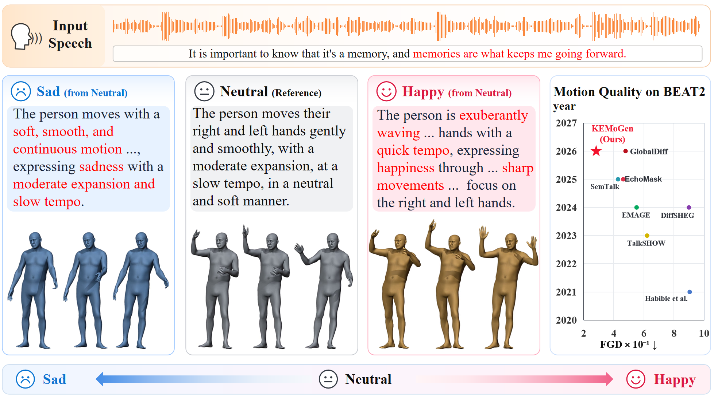
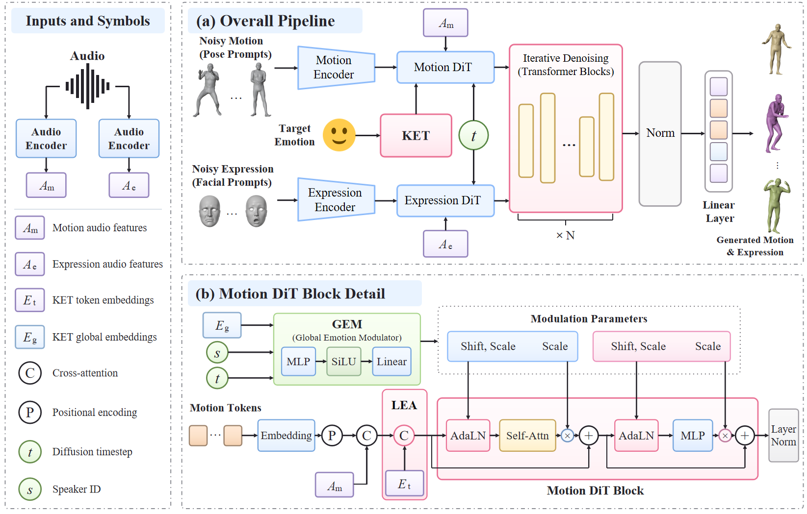
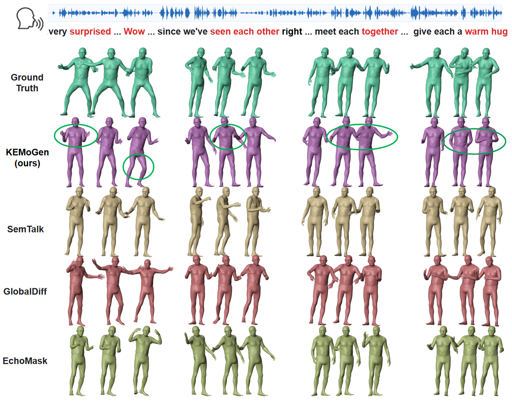

KEMoGen: Kinematic-aware Text-guided Emotion Control for Audio-driven Full-body Motion Generation
School of Computer and Communication Engineering, University of Science and Technology Beijing, Beijing, China

Abstract
We propose KEMoGen, a speech-driven full-body motion generation method for 3D virtual characters. Existing approaches remain limited by coarse-grained emotional control and insufficient full-body motion coordination. KEMoGen adopts a unified dual-branch Diffusion Transformer to jointly generate body motion and facial expressions while preserving modality-specific feature pathways. For fine-grained emotional control, we introduce Kinematic-Aware Emotional Text (KET), which converts kinematic characteristics, including motion intensity, temporal sharpness, spatial expansion, and dominant body regions, into natural-language descriptions of how emotions are expressed through movement. A Local Emotion Adapter and a Global Emotion Modulator further inject fine-grained local semantics and global affective style, respectively, enabling complementary local and global emotion modulation. Extensive experiments on the BEAT2 dataset demonstrate that KEMoGen improves body-motion quality and emotional controllability over existing methods while maintaining competitive audio–motion synchronization and facial dynamics. Subjective evaluations further support its advantages in perceived emotion accuracy and motion harmony.
Method

Quantitative Results
Best Second best among compared methods in each column.
KEMoGen achieves the lowest FGD among the compared methods in both BEAT2 settings. On Standard Speaker-2, it also achieves the highest emotion classification accuracy and the diversity score closest to ground truth.
KEMoGen results are reported as mean ± standard deviation over five seeds. ↓ and ↑ indicate lower and higher are better, respectively. For BeatAlign and Diversity (→), closer to ground truth is better. A dash indicates an unavailable value.
| Method | FGD ↓ | BeatAlign → | Diversity → | MSE (×10−8) ↓ | LVD (×10−5) ↓ | EmoAcc (%) ↑ |
|---|---|---|---|---|---|---|
| Ground truth | — | 0.7030 | 11.970 | — | — | — |
| Habibie et al. | 0.904 | 0.7716 | 8.213 | 8.614 | 8.043 | — |
| TalkSHOW | 0.620 | 0.6947 | 13.47 | 7.791 | 7.771 | — |
| EMAGE | 0.551 | 0.7724 | 13.06 | 7.680 | 7.556 | 60.16 |
| EchoMask | 0.462 | 0.7738 | 13.37 | 6.761 | 7.290 | 31.15 |
| SemTalk | 0.427 | 0.7770 | 12.91 | 6.153 | 6.938 | 44.26 |
| GlobalDiff | 0.478 | 0.7050 | 13.73 | 6.330 | — | 36.80 |
| LiveGesture | 0.457 | 0.7940 | 13.91 | 12.41 | — | — |
| KEMoGen | 0.295 ± 0.003 | 0.7648 ± 0.0017 | 12.372 ± 0.136 | 7.49 ± 0.43 | 7.18 ± 0.03 | 72.19 ± 2.73 |
| Method | FGD ↓ | BeatAlign → | Diversity → | MSE (×10−8) ↓ |
|---|---|---|---|---|
| Ground truth | — | 0.477 | 7.29 | — |
| CaMN | 0.512 | 0.200 | 5.58 | — |
| Audio2Photoreal | 0.849 | 0.326 | 6.24 | — |
| ReMoDiffuse | 1.120 | 0.218 | 5.06 | — |
| DSG | 1.174 | 0.734 | 11.12 | — |
| EMAGE | 0.692 | 0.284 | 6.06 | 6.90 |
| RAG-GESTURE | 0.487 | 0.514 | 9.94 | — |
| GlobalDiff | 0.263 | 0.404 | 8.24 | 4.14 |
| KEMoGen | 0.229 ± 0.002 | 0.699 ± 0.000 | 8.51 ± 0.05 | 7.31 ± 0.05 |
All-Speaker baseline results and ground-truth statistics follow GlobalDiff, as reported in the paper.
Qualitative Comparison
